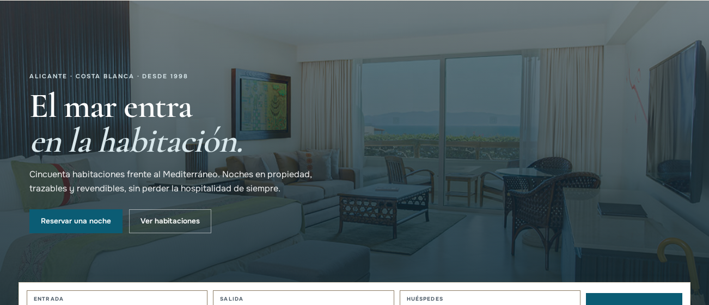
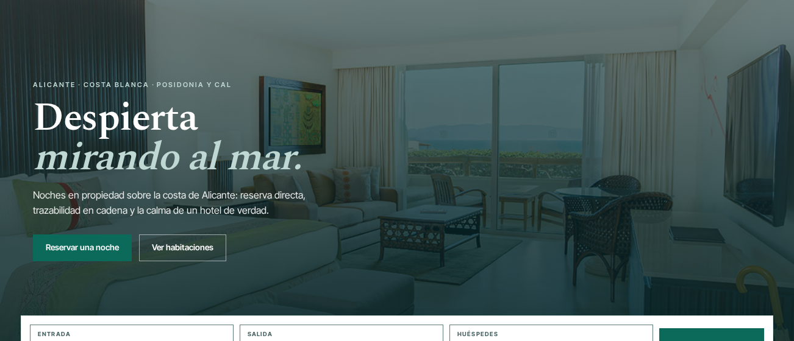

Hotel Marina del Sol · identidad visual v3
Dos Mediterráneos. Una decisión.
La misma arquitectura AdminLTE, la misma accesibilidad medida y los mismos tokens de código; dos formas de contar el hotel. Abre cada previsualización para ver la landing, la web móvil, la APK y el back-office con datos de demostración.

El Mediterráneo encalado: pared de caliza tibia, sombra de arco, agua profunda y un tiesto de terracota al sol. Fresco por la luz, no por el blanco frío: el lienzo es cálido y la fotografía manda. La marca suena a hotel boutique de Alicante, no a panel de cripto.
- 42 pares WCAG medidos · 0 fallos
- AdminLTE: light skin (cambia el sidebar)
- Migración: ≈1,5–2 días-persona (incluye verificación)
Abrir previsualización completa →
Propuesta B
Posidonia
Frescura de fondo, control a la vista.
AdminLTE 3 · dark skin «sala de máquinas»Spectral + Inter Tight

La pradera de posidonia bajo un agua transparente: verde-teal profundo, aguas claras y arena. Más fría y energética que la A, con una lectura operativa impecable: el rail oscuro del back-office separa el mando de la operación y el lienzo claro mantiene la frescura en el escaparate.
- 44 pares WCAG medidos · 0 fallos
- AdminLTE: dark skin (solo valores)
- Migración: ≈1–1,5 días-persona (incluye verificación)
Abrir previsualización completa →
Las capturas se generan desde el HTML real con Chromium (Playwright), no son mockups de Figma: lo que se ve es lo que se implementaría con los tokens de RepoTecnico/propuestas_v3_identidad/tokens/.